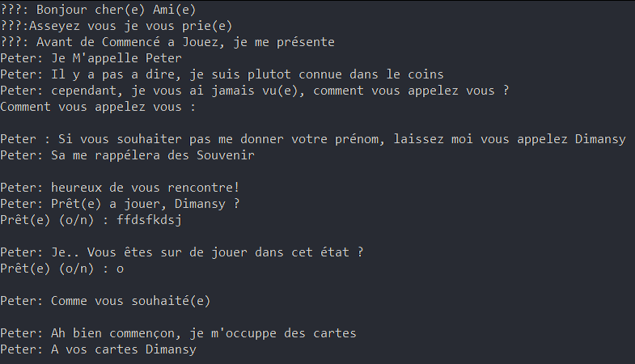

Programme code en C# avec une haute interactivité sur Visual Studio
Rencontre avec un Illusionniste
J'ai intégré à ce jeu de Blackjack, un personnage nommé Peter qui
réagit aux nombreuses réponses possibles, il peut bien réagir
en fonction des prénom mis et peut avoir des réactions
en fonction de nos façons de gagnées, des temps de pause
son marqué entre chacune de ses lignes de dialogue pour
faciliter la lecture et l'immersion. avec cela est
rajouté un système en fonction des réponses empêchant le jeu de bloquer
si la réponse n'est pas celle attendue.

Un simple jeu de cartes et de nombre
Les règles de ce jeu de blackjack permettent de jouer avec un nombre
personnalisable de paquet allant de 1 à 6.
Une fois les cartes mélanger, elles sont distribuées puis distribuer à
chaque joueur en donnant une carte sur deux, une fois les cartes en main,
les joueurs peuvent décider de piocher ainsi que L'ia
(si l'ia a plus de 17 points elle s'arrête. les points de l'IA sont
pas affiché mais comptabilisé), quand le joueur ne pioche pas,
il s'arrête jusqu'à la fin de la partie. il a été ajouté la règle de l'as,
tant que nos points une vallée pas plus de 10 l'as vaut 11,
cette valeur est définitive jusqu'à la fin de la partie.
La chance du débutant
Le parti peut s'arrête de différentes manières,
lorsqu'un des deux joueurs a atteint 21 piles,
il gagne automatiquement, c'est un Blackjack
mais si les deux atteignent 21 le même tour alors il y a égalité.
À l'inverse, si un joueur dépasse 21 alors il perd automatiquement,
si c'est le cas des deux aux mêmes tours, alors c'est égalité aussi.
Si aucun de ses deux cas arrive
alors quand les deux joueurs s'arrêtent de piocher,
les points son comptabilisé, le plus proche de 21 gagnes.
Peter à une réaction a chacune des fins de partis possibles,
quand la partie se termine-t-il vous proposé un autre parti.
Conclusion
Le projet des Blackjack est un projet réalisé en 3 jours pour le Cnam Enjmin lors du cours sur le C#. Réalisée en autonomie, l'idée de faire affronte au joueur un adversaire qui posséderait une personnalité et des réactions variées me paraissait amusante et interaction à essayer de créer une ambiance. cela fut très enrichissant pour moi, ça m'a permis de toucher pour la première fois au Thread.Sleep() pour donner un effet de dialogue ainsi qu'à l'implémentation de fonction pour le cas du Blackjack. Pour ces projets nous étions soumis à une limite de temps pour rendre le projet, cela m'a permis d'avoir une première expérience avec les deadlines et ne pas trop perde de temps.